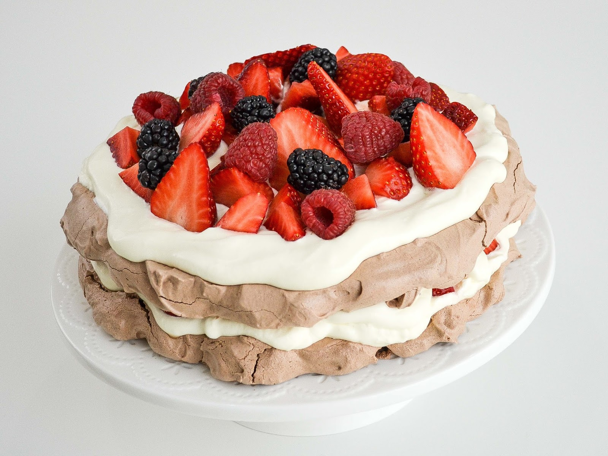

Pavlova con crema y frutillas

La pavlova es una preparación icónica de la repostería que destaca por su contraste de texturas y su increíble ligereza. Su base de merengue es crocante y aireada. En esta receta, la base se combina con una generosa capa de crema chantilly extra firme, que soporta perfectamente el peso de las frutas sin desmoronarse. Además, la acidez de las frutillas equilibra el dulzor del merengue, convirtiéndolo en un postre perfecto para ocasiones especiales.